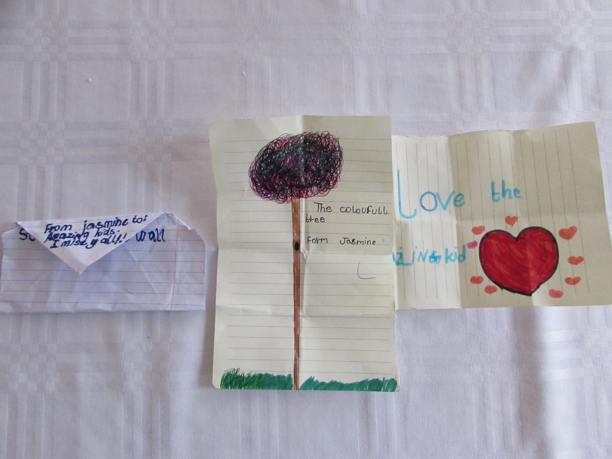
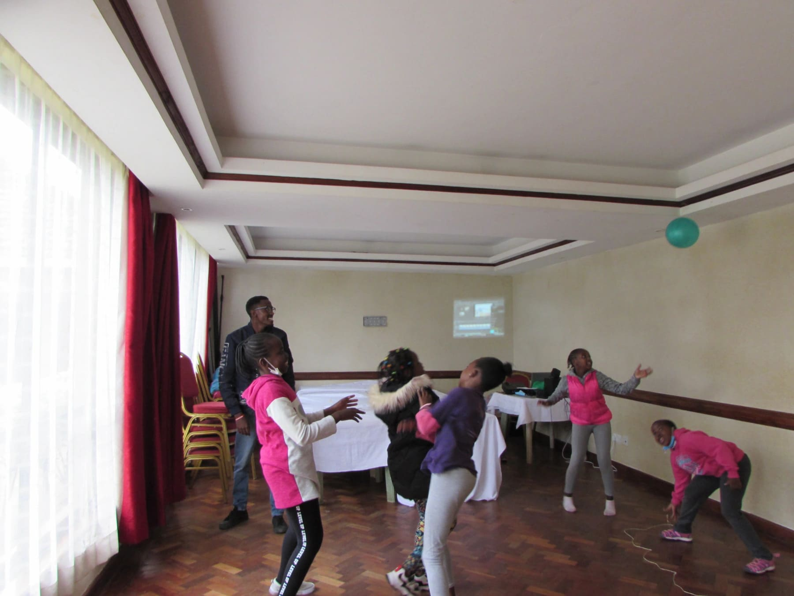
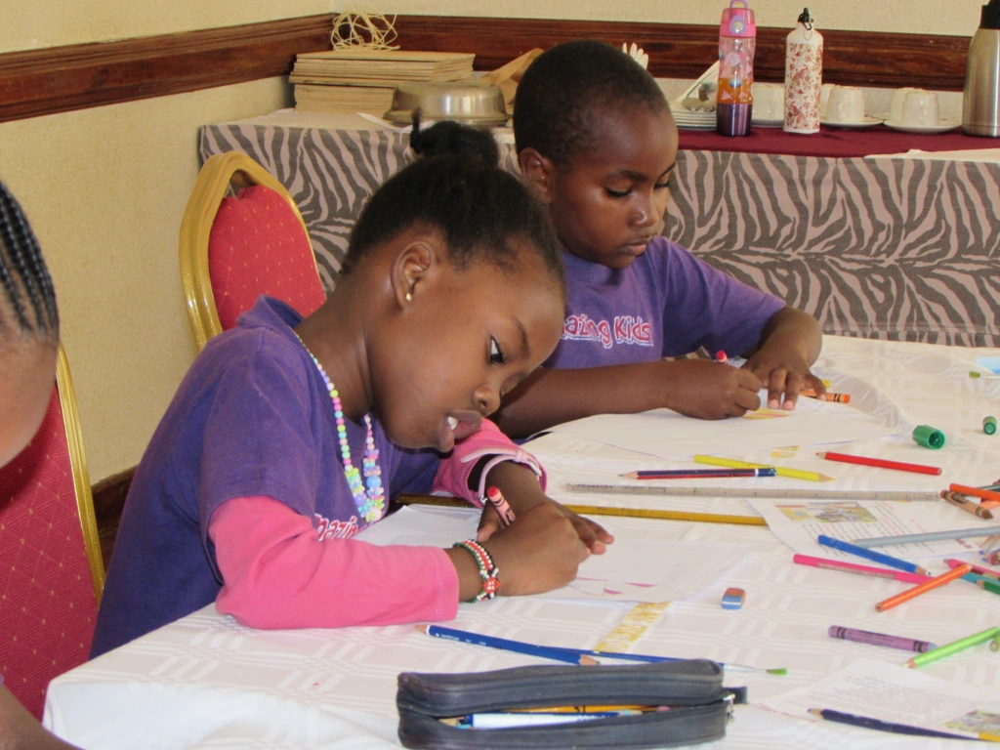
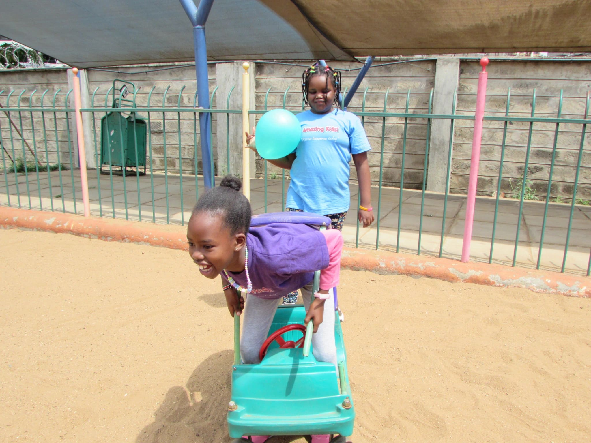
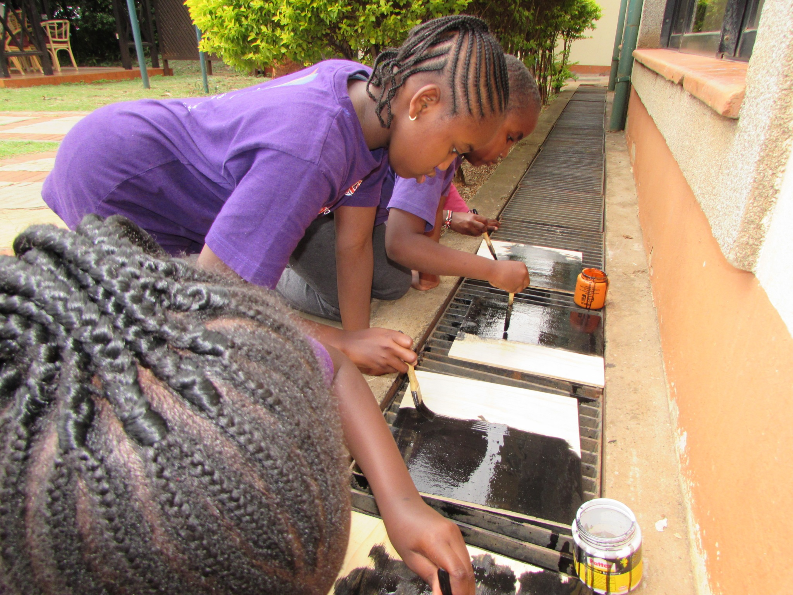
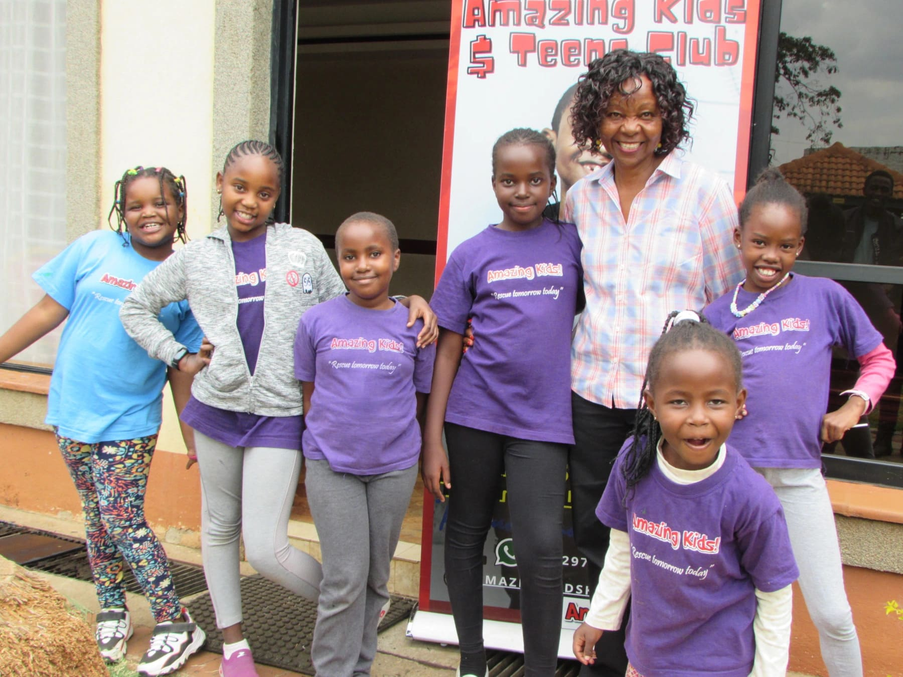

Ah, letters! There's just something about them that brings a feel good energy and gives a trip to memory lane of some good old times.
On arrival on June 11th, The Amazing Kids received this amazing surprise in form of a letter with these beautiful drawings and words around it saying I love Amazing Kids. This thoughtful and kind gesture was so heartwarming to us. Probably one of the best ways to start a day. A letter from a friend who used to be part of us. Thank you Jasmine!
Not wanting to cool the high energies, we played a balloon game.
No discipline seems pleasant at the time but painful. Later on however, it produces a harvest of righteousness and peace for those who have been trained by it.
Hebrews 12:11
Discipline is a key aspect of a human being. Without it there would just be disobedience and chaos. With discipline comes morality and knowledge of right and wrong. As kids, we need to understand that when we're corrected it's for our own good and the society at large. We shared examples and stories of indiscipline around the world and their consequences and through them learning the value of discipline.
The money lesson was on Communication Skills. We learnt how to speak clearly to customers as this shows confidence in what you're selling and greatly improves the number of sales. To drive this point home, we engaged in an activity whereby we designed an ad/ poster for our business and stood in-front of the class describing what we just created.
Here's a snippet of us doing the activity.
and here's some short snippets of guys briefly taking us through what they're making.
All in all, we loved the activity and the experience too which tested our creativity skills.
We then took a breather with some tea, snacks and a short entertaining video clip,
then headed to the playground.
We started a new craft project and boy were we so eager to start!
We were preparing our boards for a string art project. Once we painted them, we left them in the sun to dry for a bit.
Who said you can't have fun in between a project? We played a short Broken Telephone game as we waited.
We then carried on with painting our second coat on the boards for the color to pop!
The day had quickly come to an end as we finished off with taking this amazing picture with Teacher Ruth.
We hope you enjoyed our day, we'll leave you with this highlight of the day, bye, see you next Saturday!